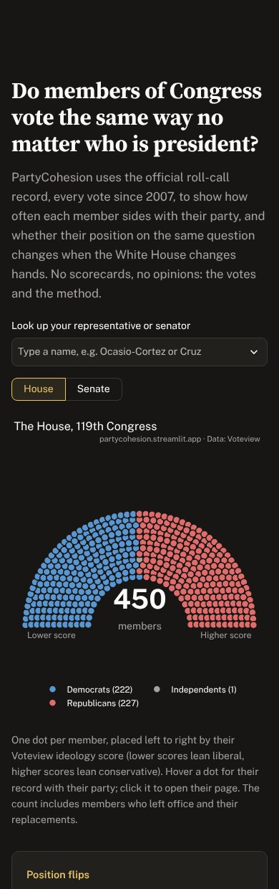

PartyCohesion
Do members of Congress vote the same way no matter who is president?
A free, neutral website built on the official record of every House and Senate vote since 2007. It shows how often each member votes with their party, whether their votes change when the White House changes hands, and how their votes compare with what they said on the campaign trail and the floor of Congress. Built in Python with Streamlit, Plotly and pandas, refreshed automatically twice a week, with 109 automated tests.
Free hosting puts the app to sleep when it is quiet. If you see a wake-up screen, it is back in about 30 seconds.
